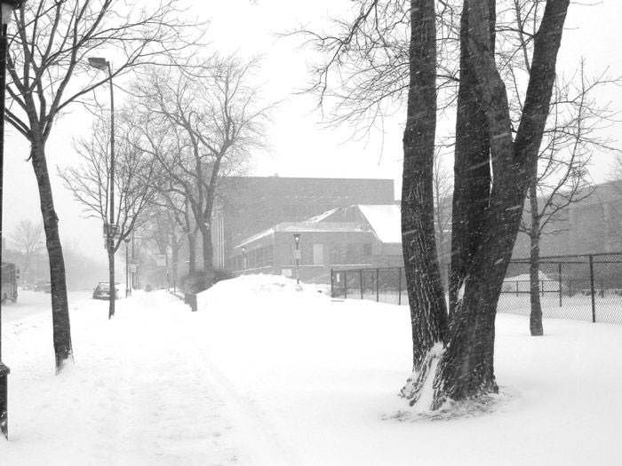

The Blizzard of 1949 is considered one of the worst on record for the northern Plains. The first storm began January 2 and continued through January 5, with heavy snow, strong winds and cold temperatures. Subsequent storms through mid-February produced enormous snow drifts that paralyzed much of the region. Roads and railroads were blocked, so airplanes were used to bring food and medical supplies to isolated towns and hay to livestock.
Contact Information
Phone: 888-888-8888
Email: prestonidaho@contactless.com
Address: 888 Preston Drive, Idaho